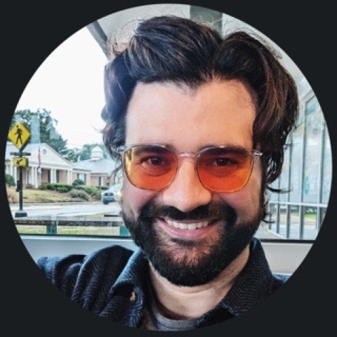
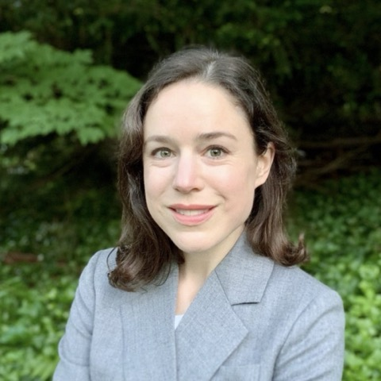
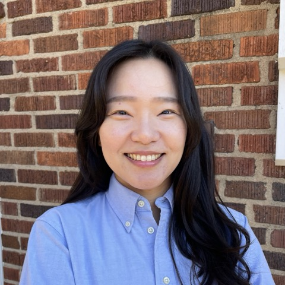

The people of M2C2
M2C2 brings together scholars of political violence and conflict from across methodological traditions — from graduate students to senior faculty.

Dotan Haim
Associate Professor of Political Science, Florida State University

Mara Revkin
Associate Professor of Law and Political Science, Duke University
Scholars who have presented, discussed, or chaired at M2C2 events.
| Name | Institution |
|---|---|
| Consuelo Amat | Johns Hopkins University |
| Laia Balcells | Georgetown University |
| Quintin Beazer | Florida State University |
| Omar García-Ponce | George Washington University |
| Olga Gasparyan | Florida State University |
| Danielle Gilbert | Northwestern University |
| Alan Jacobs | University of British Columbia |
| Janet Lewis | George Washington University |
| Shelley Liu | Duke University |
| Jason Lyall | Dartmouth College |
| Zachariah Mampilly | Baruch College — CUNY |
| Kelly Matush | Florida State University |
| Makena Micheni | London School of Economics |
| Aidan Milliff | Florida State University |
| Eduardo Moncada | Barnard College, Columbia University |
| Nicholas Sambanis | Yale University |
| David Siegel | Duke University |
| Erica Simmons | University of Wisconsin-Madison |
| Dan Slater | University of Michigan |
| Paul Staniland | University of Chicago |
| Scott Straus | University of California Berkeley |
| Jakana Thomas | University of California San Diego |
| Jessie Trudeau | Syracuse University |
| Andrés Uribe | University of Wisconsin-Madison |
Junior Fellows Program
Each M2C2 workshop selects a class of Junior Fellows. Fellows take part in a comprehensive mentorship program:
Read-ahead feedback
Fellows discuss their paper at the workshop and receive in-depth feedback from mentors and peers in small-group sessions.
Mentorship program
One-on-one meetings with mentors at the conference, plus a year of virtual peer-mentorship and professionalization sessions.
Ongoing community
A standing invitation to future consortium events and workshops, fostering an ongoing community of emerging conflict scholars.
2026 Cohort
2025 Cohort

Jiyoung Kim
Michigan State University
2025 Fellow · then University of California Los Angeles